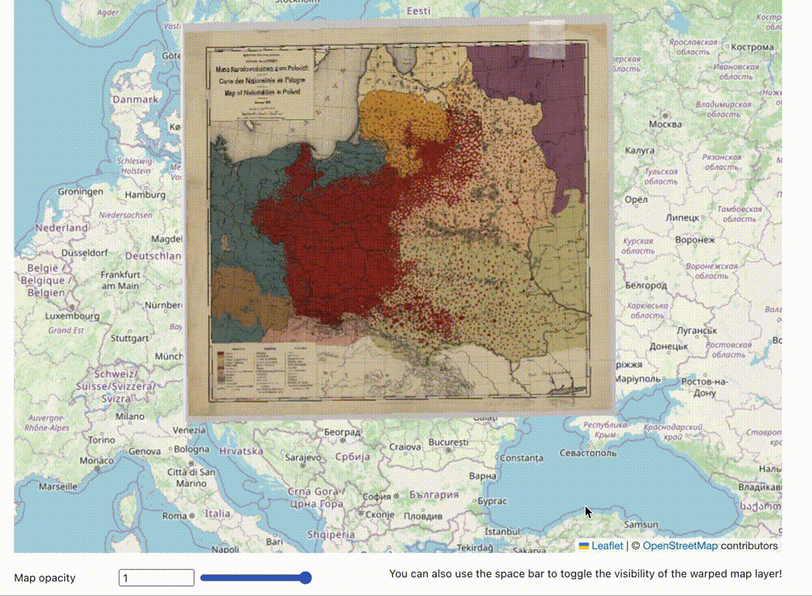
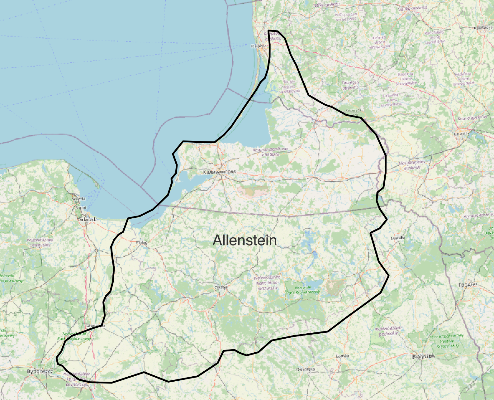

3. Data overview
As an example project, we are going study Poland at the end of WWI. By the end of the course, we will have made maps that help us understand the country’s demographic makeup at the time. This is a real mapmaking example we worked on with a history class about the making of borders. 1 At any point, you can skip ahead to the maps and datasets. To download the data, visit this Google Drive.
We are going to be working with three datasets.
GIS dataset #1
A map showing nationalities in Poland in 1919. We have already georeferenced the map, so it lines up nicely with our other data.

 Here is the map legend showing what we can learn from the map – the breakdown of nationalities in Poland at the time the map was made, in 1919.
Here is the map legend showing what we can learn from the map – the breakdown of nationalities in Poland at the time the map was made, in 1919.
GIS Dataset #2
A polygon dataset representing the extent of the Allenstein plebiscite region.

We can use this layer to understand the extent of the region we are studying.GIS Dataset #3
A point dataset containing statistical information about Polish cities in the 1910s, including spoken languages, and the plebiscite vote results, city by city.
We created the Polish cities dataset using a table found in The American Political Science Review. Here is a link to the HOLLIS record for the article from which the cities data is derived.
Table we used to create the GIS data for Polish cities.
Next lesson: 4. Import datasets →
← Previous lesson: 2. Tutorial requirements
-
1920 East Prussian plebiscite, Wikipedia. ↩︎